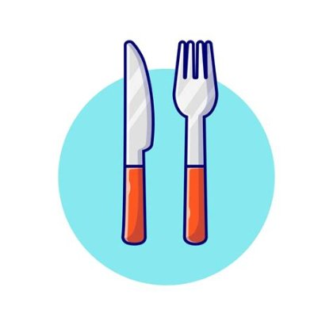

Receitas que transformam ingredientes em momentos inesquecíveis.
Descubra receitas deliciosas, práticas e cheias de sabor para todos os momentos. No Foods Fachi, você encontra inspiração para cozinhar melhor, experimentar novos sabores e deixar cada refeição especial.
RECEITAS FACEIS
Receitas práticas e saborosas para o dia a dia, com ingredientes acessíveis e preparo descomplicado.
EXPLORE SABORES
Descubra pratos de diferentes estilos e cozinhas, encontre novos sabores e saia da rotina.

DICAS DE COZINHA
Aprenda técnicas, truques e dicas para melhorar seus pratos e cozinhar com mais confiança.
CONTATO

UM POUCO SOBRE NOS
O Foods Fachi nasceu para tornar a cozinha um lugar de inspiração, criatividade e bons momentos.
Acreditamos que uma boa receita não é apenas uma lista de ingredientes, mas uma oportunidade de
criar memórias e compartilhar experiências.
Aqui você encontra receitas deliciosas, práticas e
variadas, pensadas para quem ama cozinhar e também para quem está dando os primeiros passos na cozinha.
Do prato simples do dia a dia às receitas especiais para surpreender, queremos ajudar você a encontrar
inspiração para cada ocasião.
Nossa missão é levar mais sabor para a sua rotina, apresentando receitas
fáceis de acompanhar, dicas úteis e novas ideias para transformar ingredientes em pratos que dão vontade de repetir.